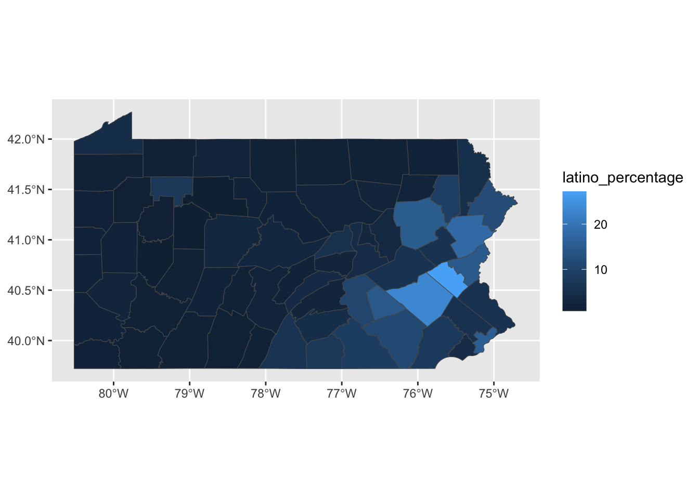
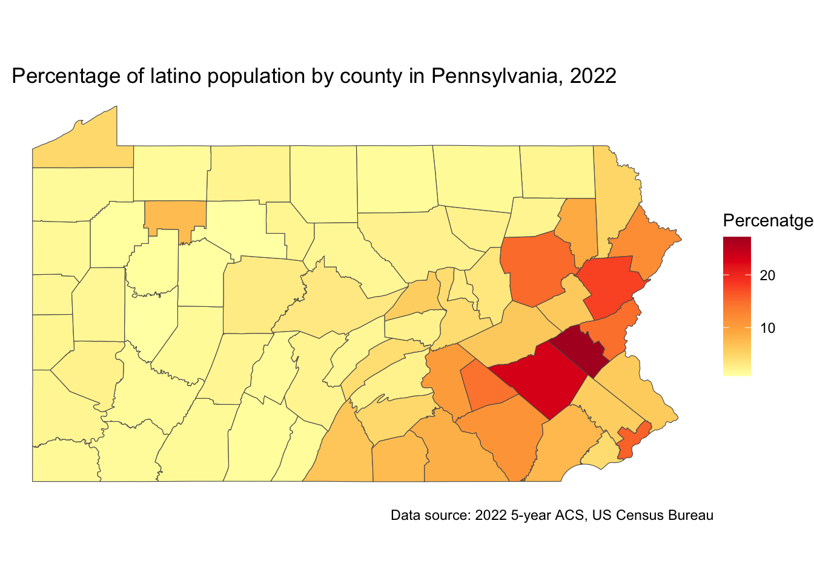
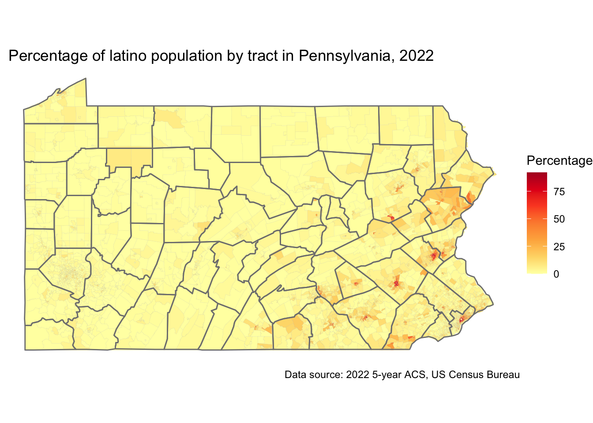
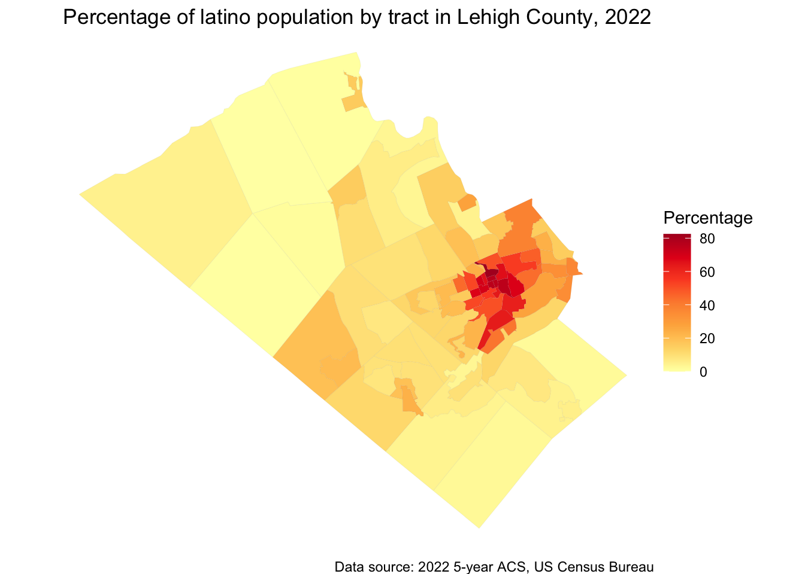

library(tidycensus)Mapping Census Data in R
Workshop - Fall 2024
1 Installing the packages
We are going to start by installing the following packages
install.packages(c("tidycensus", "tidyverse", "mapview", "ggspatial", "leafsync", "ggplot2"))tidycensus: allows users to interface with a select number of the US Census Bureau’s data APIs and return tidyverse-ready data frames, optionally with simple feature geometry included.
tidyverse: is a collection of open-source R packages that help with data science tasks like importing, tidying, manipulating, and visualizing data
mapview: is a tool for quickly creating interactive maps of spatial data.
ggspatial: is a framework for interacting with spatial data using ggplot2 to create maps.
leafsync: is a plugin for leaflet to produce potentially synchronised small multiples of leaflet web maps wrapping Leaflet.
2 The tidycensus package
In this tutorial we will be using tidycensus package, developed by Kyle Walker.

tidycensus is an R package that allows users to interface with a select number of the US Census Bureau’s data APIs and return tidyverse-ready data frames, optionally with simple feature geometry included.
2.1 Essential functions
get_decennial(), which requests data from the US Decennial Census APIs for 2000, 2010, and 2020.
get_acs(), which requests data from the 1-year and 5-year American Community Survey samples. Data are available from the 1-year ACS back to 2005 and the 5-year ACS back to 2005-2009.
get_estimates(), an interface to the Population Estimates APIs. These datasets include yearly estimates of population characteristics by state, county, and metropolitan area, along with components of change demographic estimates like births, deaths, and migration rates.
get_pums(), which accesses data from the ACS Public Use Microdata Sample APIs. These samples include anonymized individual-level records from the ACS organized by household and are highly useful for many different social science analyses. get_pums() is covered in more depth in Chapters 9 and 10.
get_flows(), an interface to the ACS Migration Flows APIs. Includes information on in- and out-flows from various geographies for the 5-year ACS samples, enabling origin-destination analyses.
3 Get ACS data
3.1 About the ACS
The American Community Survey ACS is a nationwide survey that collects and publishes information about the US population’s social, economic, housing, and demographic characteristics.
The ACS provides data on topics such as: income, jobs and occupations, educational attainment, veterans, and housing tenure.
The ACS produces two types of estimates:
- 1-year estimates: Available for geographic areas with populations of 65,000 or more. These estimates are more current.
- 5-year estimates: Available for all geographic areas, including census tracts and block groups. These estimates are more statistically reliable, especially for smaller population groups
3.2 Getting a specific variable for all counties in one state.
We are going to start exploring census data at the county level. We are going to ask for a table with the total population for each county in the State of Pennsylvania.
- Load the package with the following command
- Create a new object named
latino_pop_PAwith the following code
Be aware that the property geography = is being specified with the string "county" to get data at this level. We are setting the property state = to retrieve all counties in Pennsylvania by defining the value "PA". The line variables = comtains the identificator for the total of population in the original census table. We will see how to identify the variables ID in the following steps.
latino_pop_PA <- get_acs(
geography = "county",
state = "PA",
variables = "B03001_003",
year = 2022
)Getting data from the 2018-2022 5-year ACSWarning: • You have not set a Census API key. Users without a key are limited to 500
queries per day and may experience performance limitations.
ℹ For best results, get a Census API key at
http://api.census.gov/data/key_signup.html and then supply the key to the
`census_api_key()` function to use it throughout your tidycensus session.
This warning is displayed once per session.latino_pop_PA# A tibble: 67 × 5
GEOID NAME variable estimate moe
<chr> <chr> <chr> <dbl> <dbl>
1 42001 Adams County, Pennsylvania B03001_003 7688 NA
2 42003 Allegheny County, Pennsylvania B03001_003 29272 NA
3 42005 Armstrong County, Pennsylvania B03001_003 560 NA
4 42007 Beaver County, Pennsylvania B03001_003 3227 NA
5 42009 Bedford County, Pennsylvania B03001_003 598 NA
6 42011 Berks County, Pennsylvania B03001_003 99460 NA
7 42013 Blair County, Pennsylvania B03001_003 1721 NA
8 42015 Bradford County, Pennsylvania B03001_003 946 NA
9 42017 Bucks County, Pennsylvania B03001_003 38195 NA
10 42019 Butler County, Pennsylvania B03001_003 3391 NA
# ℹ 57 more rowsThe column estimate shows the number of latino population for each county in Pennsylvania, while the column moe shows the margin of error around it.
3.3 Exploring the original census file variables
As mentioned, each variable has its unique identifier in the original file. You will need to know the identifier of the variables you want to get in order to process a file in your project. To explore the variables in the original files you can use the load_variables() function specifying the year and dataset.
For example you can use the following to get the ACS 2022 5-year-estimate variables.
vars <- load_variables(2022, "acs5")
head(vars)# A tibble: 6 × 4
name label concept geography
<chr> <chr> <chr> <chr>
1 B01001A_001 Estimate!!Total: Sex by Age (Whi… tract
2 B01001A_002 Estimate!!Total:!!Male: Sex by Age (Whi… tract
3 B01001A_003 Estimate!!Total:!!Male:!!Under 5 years Sex by Age (Whi… tract
4 B01001A_004 Estimate!!Total:!!Male:!!5 to 9 years Sex by Age (Whi… tract
5 B01001A_005 Estimate!!Total:!!Male:!!10 to 14 years Sex by Age (Whi… tract
6 B01001A_006 Estimate!!Total:!!Male:!!15 to 17 years Sex by Age (Whi… tract The resulting table will have a column name with the variable code (you will input this text in the get_acs() function), a label column with the description fo the variable, a concept with the group variable and a geography column specifying the smallest level at which the variable is available.
For our purpose, the ACS 2022 variables that contain the number of people of Hispanic or Latino Origin are from row 580 to 609. Here is an extract of these rows.
vars[580:609,]# A tibble: 30 × 4
name label concept geography
<chr> <chr> <chr> <chr>
1 B03001_002 Estimate!!Total:!!Not Hispanic or Latino Hispan… tract
2 B03001_003 Estimate!!Total:!!Hispanic or Latino: Hispan… tract
3 B03001_004 Estimate!!Total:!!Hispanic or Latino:!!Mexican Hispan… tract
4 B03001_005 Estimate!!Total:!!Hispanic or Latino:!!Puerto R… Hispan… tract
5 B03001_006 Estimate!!Total:!!Hispanic or Latino:!!Cuban Hispan… tract
6 B03001_007 Estimate!!Total:!!Hispanic or Latino:!!Dominica… Hispan… tract
7 B03001_008 Estimate!!Total:!!Hispanic or Latino:!!Central … Hispan… tract
8 B03001_009 Estimate!!Total:!!Hispanic or Latino:!!Central … Hispan… tract
9 B03001_010 Estimate!!Total:!!Hispanic or Latino:!!Central … Hispan… tract
10 B03001_011 Estimate!!Total:!!Hispanic or Latino:!!Central … Hispan… tract
# ℹ 20 more rows3.4 Getting tables from the ACS
Another way to get variables from the ACS is to use the table = property in tidycensus. Instead of returning one single variable as we did in the previous step, this will return a table with all variables in the B03001 set that contains all latino population B03001_003, along with:
| Code | Variable |
|---|---|
| B03001_004 | Mexican |
| B03001_005 | Puerto Rican |
| B03001_006 | Cuban |
| B03001_007 | Dominican |
| B03001_009 | Costa Rican |
| B03001_010 | Guatemalan |
| B03001_011 | Honduran |
| B03001_012 | Nicaraguan |
| B03001_013 | Panamanian |
| B03001_014 | Salvadoran |
| B03001_015 | Other Central American |
| B03001_017 | Argentinian |
| B03001_018 | Bolivian |
| B03001_019 | Chilean |
| B03001_020 | Colombian |
| B03001_021 | Ecuadorian |
| B03001_022 | Paraguayan |
| B03001_023 | Peruvian |
| B03001_024 | Uruguayan |
| B03001_025 | Venezuelan |
| B03001_026 | Other South American |
| B03001_027 | Other Hispanic or Latino |
latino_table_PA <- get_acs(
geography = "county",
state = "PA",
##county = "Philadelphia",
table = "B03001",
year = 2022,
output = "wide"
)Getting data from the 2018-2022 5-year ACSLoading ACS5 variables for 2022 from table B03001. To cache this dataset for faster access to ACS tables in the future, run this function with `cache_table = TRUE`. You only need to do this once per ACS dataset.latino_table_PA# A tibble: 67 × 64
GEOID NAME B03001_001E B03001_001M B03001_002E B03001_002M B03001_003E
<chr> <chr> <dbl> <dbl> <dbl> <dbl> <dbl>
1 42001 Adams Coun… 104604 NA 96916 NA 7688
2 42003 Allegheny … 1245310 NA 1216038 NA 29272
3 42005 Armstrong … 65538 NA 64978 NA 560
4 42007 Beaver Cou… 167629 NA 164402 NA 3227
5 42009 Bedford Co… 47613 NA 47015 NA 598
6 42011 Berks Coun… 428483 NA 329023 NA 99460
7 42013 Blair Coun… 122640 NA 120919 NA 1721
8 42015 Bradford C… 60159 NA 59213 NA 946
9 42017 Bucks Coun… 645163 NA 606968 NA 38195
10 42019 Butler Cou… 194562 NA 191171 NA 3391
# ℹ 57 more rows
# ℹ 57 more variables: B03001_003M <dbl>, B03001_004E <dbl>, B03001_004M <dbl>,
# B03001_005E <dbl>, B03001_005M <dbl>, B03001_006E <dbl>, B03001_006M <dbl>,
# B03001_007E <dbl>, B03001_007M <dbl>, B03001_008E <dbl>, B03001_008M <dbl>,
# B03001_009E <dbl>, B03001_009M <dbl>, B03001_010E <dbl>, B03001_010M <dbl>,
# B03001_011E <dbl>, B03001_011M <dbl>, B03001_012E <dbl>, B03001_012M <dbl>,
# B03001_013E <dbl>, B03001_013M <dbl>, B03001_014E <dbl>, …Note that this table contains both the estimate for the variable end the error. All variable names ending with E contain the estimate.
4 Exploring the percentage of latino population by county
To explore the percentage of latino population we arw going to create a graph with bars showing this variable. First, we clean up the county names to contain the name of the county only.
latino_table_PA$NAME <- gsub(" County|, Pennsylvania", "", latino_table_PA$NAME)Second, we calculate the percentage of latino population by dividing the number of latinos by the total population on each county. We add this new variable latino_percentage to our table.
latino_table_PA$latino_percentage <- (latino_table_PA$B03001_003E / latino_table_PA$B03001_001E) * 100Lastly, we plot the percentage in bars using the ggplot() and geom_bar() options.
library("ggplot2")
ggplot(latino_table_PA, aes(x = reorder(NAME, -latino_percentage), y = latino_percentage)) +
geom_bar(stat = "identity", fill = "darkred") +
labs(
x = "County",
y = "Latino Population Percentage",
title = "Percentage of Latino Population by County in Pennsylvania"
) +
theme_minimal() +
theme(axis.text.x = element_text(angle = 90, hjust = 1))As seen in the graph, Lehigh County has the highest percentage of latino population (more than 35%) followed by Berks and Monroe (more than 20%) and Philadelphia, Luzerne, Northhampton, Lebanon, Pike, Lancaster and Dauphin (more than 10%).
5 Creating a map with the ACS data
In this section we are going to answer the question:
Guiding question
What is the spatial distribution of the percentage of latino population in the State of Pennsylvania?
To do so, we are going to explore additional properties on the get_acs() function and how to use it to generate different types of maps.
5.1 Getting the geometry from the census
To build a map with the census and ACS data we will need the geometry (polygons) of the geography we are adding the data to. In this exmaple, the counties.
The geometry = TRUE option of the tidycensus package has the ability to download an additional column that stores a polygon geometry of the corresponding geographic level, in this case the counties.
If you rerun the code below, adding the geometry = TRUE option, the resulting table will have an additional column.
We can plot the polygons with the following line.
plot(latino_table_PA$geometry)5.2 Creating a choroplet map from an ACS variable
To answer our guiding question we are going to plot the percentage of latino population in a map.
First, we are going to calculate the percentage of latino population on the table that contains geometry.
latino_table_PA$latino_percentage <- (latino_table_PA$B03001_003E / latino_table_PA$B03001_001E) * 100Now, we can simply use the same ggpllot code line we used before to get a map of this variable. We set the data property to point to our latino_table_PA table and the fill option to the variable that contains the percentage we created in the previous step. The geom_sf() function is used to read the geomtry field as polygons and render them in a map.
ggplot(data = latino_table_PA, aes(fill = latino_percentage)) +
geom_sf()
5.3 Customizing the choroplet map
For a customized version of the map, we can use the scale_fill_distiller() function that allows choosing from different map color palettes and labs() function to specify the general title, footnote caption and key title of the map.
If you want to know more about the color ramps go to ColorBrewer.
ggplot(data = latino_table_PA, aes(fill = latino_percentage)) +
geom_sf() +
scale_fill_distiller(palette = "YlOrRd",
direction = 1) +
labs(title = " Percentage of latino population by county in Pennsylvania, 2022",
caption = "Data source: 2022 5-year ACS, US Census Bureau",
fill = "Percenatge") +
theme_void()
5.4 Exercise 1: Exploring other geometries, census tracts.
Although the counties map show certain spatial pattern, we know that not all the county is the same internally. If we explore this variable with more granularity, we might see different patterns.
Lets re-do the whole process but this time getting the data at the census tract level.
- Start by creating a table
latino_table_tracts_PAand setting thegeography =to “tract”. All the rest can remain the same.
Attention
This process might take longer than the ones we run before due to a higher number of records.
latino_table_tracts_PA <- get_acs(
geography = "tract",
state = "PA",
table = "B03001",
year = 2022,
output = "wide",
geometry = TRUE
)- Now, lets calculate the percentage of latino population on each tract.
latino_table_tracts_PA$latino_percentage <- ifelse(latino_table_tracts_PA$B03001_003E>0, 100* (latino_table_tracts_PA$B03001_003E / latino_table_tracts_PA$B03001_001E),0)In this case we used an ifelse clause because some tracts have 0 latino population and we want to avoid having null values in our results.
- And lastly, lets create the map using the table and variable we just created.
ggplot(data = latino_table_tracts_PA, aes(fill = latino_percentage)) +
geom_sf() +
scale_fill_distiller(palette = "YlOrRd",
direction = 1) +
labs(title = " Percentage of latino population by tract in Pennsylvania, 2022",
caption = "Data source: 2022 5-year ACS, US Census Bureau",
fill = "Percentage") +
theme_void()Where did the people go?
In this case, it is convenient to change the polygon outline thickness by adding linewidth = 0.01 to the geom_sf() function.
We can also add the county outlines to identify them by addind borders("county","pennsylvania").
## install.packages("maps")
library("maps")
ggplot(data = latino_table_tracts_PA, aes(fill = latino_percentage)) +
geom_sf(linewidth=0.01) +
scale_fill_distiller(palette = "YlOrRd",
direction = 1) +
labs(title = " Percentage of latino population by tract in Pennsylvania, 2022",
caption = "Data source: 2022 5-year ACS, US Census Bureau",
fill = "Percentage") +
borders("county","pennsylvania") +
theme_void()
5.5 Exercise 2: Focusing on a specific county: Lehigh County.
We are going to focus on the county with the highest percentage of Latino population, Lehigh County.
For that, lets start generating a specific table for that county.
Notice that we set the table name to lehigh_latino, the geography = tract and added county = "Lehigh" to get all tracts in Lehigh County.
Now lest calculate the percentage of latinos using the same code we used before. Be sure to use the correct table name lehigh_latino.
lehigh_latino$latino_percentage <- ifelse(lehigh_latino$B03001_003E>0, 100* (lehigh_latino$B03001_003E / lehigh_latino$B03001_001E),0)And now, lets generate a choroplet map as the last we did.
ggplot(data = lehigh_latino, aes(fill = latino_percentage)) +
geom_sf(linewidth=0.01) +
scale_fill_distiller(palette = "YlOrRd",
direction = 1) +
labs(title = " Percentage of latino population by tract in Lehigh County, 2022",
caption = "Data source: 2022 5-year ACS, US Census Bureau",
fill = "Percentage") +
theme_void()
Again, in this map we can see that the highest percentage of latino population is located towards the center of the county while the outter tracts have very low values.
6 Customized interactive maps with mapgl()
There are multiple ways you can customize your maps in R. We are going to explore the mapgl() package to create interactive maps.
6.1 The mapgl() package
The mapgl R package allows users to create interactive maps in R using the Mapbox GL JS and MapLibre GL JS libraries:
Features Create globe visualizations, layer objects to make filled maps, circle maps, heatmaps, and 3D graphics, and customize map styles and views.
Ease of use Designed to be intuitive for R users while still offering the capabilities of the Mapbox GL JS and MapLibre GL JS libraries
Flexibility Allows for more code to be written when making maps, but also gives users more flexibility in how they design their maps
Shiny web applications Includes utilities to use Mapbox and MapLibre maps in Shiny web applications
6.2 Getting started with mapgl
The mapgl package lets you create maps using Mapbox and Maplibre. These two are javascript libraries that render interactive maps in the web. For this demo, we are using Maplibre since it is open-source and free to use.
Lets start by installing the mapgl package and calling the library with the code below.
install.packages("mapgl")library(mapgl)To initialize a map we will need the following line of code.
maplibre()It will display a map of the world with the default basemap from CARTO’s Voyager tiles.
You can set some things in the map by using style =, center =, zoom =, bearing =, pitch =, and others. We are going to initialize a map centered at Temple University Charles Library in Philadelphia, PA. To do so, I added center = c(-75.15541, 39.98215) the geographic coordinates of the building and zoom = 16 a zoom that is closer to this part of the city.
maplibre(
center = c(-75.15541, 39.98215),
zoom = 16,
)6.3 Adding census data to maplibre
Now, we are going to initialize a map centered in the State of Pennsylvania using the table we created before latino_table_PA. We are going to store this map in the variable pa_map.
pa_map <- maplibre(bounds = latino_table_PA)
pa_map
In the following code, we are going to add a layer and a legend to our map. With the add_fill_layer() we are able to call the column = "latino_percentage from our source = latino_table_PA. We are setting a continuous color ramp using values between 1 and 40 to accomodate the colors between light yellow and dark orange.To improve the visualization of the reference data in the background we set fill_oppacity = 0.7.
To add a legend we simply used the same settings for values and colors that we used previously and added a title.
pa_map |>
add_fill_layer(
id = "pa_latino",
source = latino_table_PA,
fill_color = interpolate(
column = "latino_percentage",
values = c(1, 40),
stops = c("lightyellow", "darkorange"),
na_color = "lightgrey"
),
fill_opacity = 0.7
) |>
add_legend(
"Percentage of Latino Population, 2022",
values = c(1, 40),
colors = c("lightyellow", "darkorange")
)6.4 Adding interactivity to your map
There are several ways you can make you map interactive. From adding navigation controls using add_navigation_control() to adding a popup and tooltip. In the following code, we also use a categorical styling instead of a continous color ramp.
latino_table_PA$popup <- glue::glue(
"<strong>County: </strong>{latino_table_PA$NAME}<br><strong>Percentage: </strong>{sprintf('%.2f', latino_table_PA$latino_percentage)}%"
)
brewer_pal <- RColorBrewer::brewer.pal(6, "YlGnBu")
pa_map |>
add_fill_layer(
id = "pa_latino",
source = latino_table_PA,
fill_color = step_expr(
column = "latino_percentage",
base = brewer_pal[1],
stops = brewer_pal[1:6],
values = seq(0.8, 27.2, length.out = 6),
na_color = "white"
),
fill_opacity = 0.5,
popup = "popup",
tooltip = "latino_percentage",
hover_options = list(
fill_color = "yellow",
fill_opacity = 1
)
) |>
add_legend(
"Latino Population, 2022",
values = c(
"Less than 5%",
"5%-10%",
"10%-15%",
"15%-20%",
"20%-25%",
"More than 25%"
),
colors = brewer_pal,
type = "categorical"
) |>
add_navigation_control()6.5 Exercise 3: Redo the interactive map for Philadelphia County
Now we are going to redo the interactive map for a specific county. We can use the same code we used in step 5.5 to create a new table for Philadelphia. We also calculated the percentage of latino population.
philly_latino <- get_acs(
geography = "tract",
state = "PA",
county = "Philadelphia",
table = "B03001",
year = 2022,
output = "wide",
geometry = TRUE
)
philly_latino$latino_percentage <- ifelse(
philly_latino$B03001_003E > 0,
round(100 * (philly_latino$B03001_003E / philly_latino$B03001_001E), 2),
0
)We initialize the map with the following code.
philly_map <- maplibre(bounds = philly_latino) Now, lets build the interactive map.
philly_latino$popup <- glue::glue(
"<strong>Name: </strong>{philly_latino$GEOID}<br><strong>Percentage: </strong>{philly_latino$latino_percentage}%"
)
brewer_pal <- RColorBrewer::brewer.pal(9, "YlGnBu")
philly_map |>
add_fill_layer(
id = "philly_latino",
source = philly_latino,
fill_color = step_expr(
column = "latino_percentage",
base = brewer_pal[1],
stops = brewer_pal[1:9],
values = seq(1, 92.03, length.out = 9),
na_color = "white"
),
fill_opacity = 0.5,
popup = "popup",
tooltip = "latino_percentage",
hover_options = list(
fill_color = "yellow",
fill_opacity = 1
)
) |>
add_legend(
"Latino Population, Philadelphia 2022",
values = c(
"Less than 12%",
"12% - 22%",
"22% - 32%",
"32% - 42%",
"42% - 53%",
"53% - 63%",
"63% - 73%",
"73% - 84%",
"More than 84%"
),
colors = brewer_pal,
type = "categorical"
) |>
add_navigation_control()